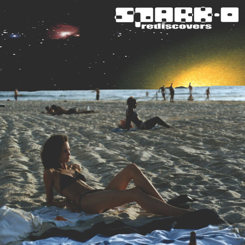
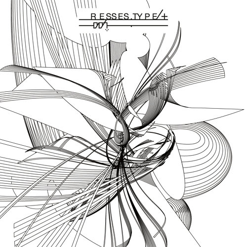
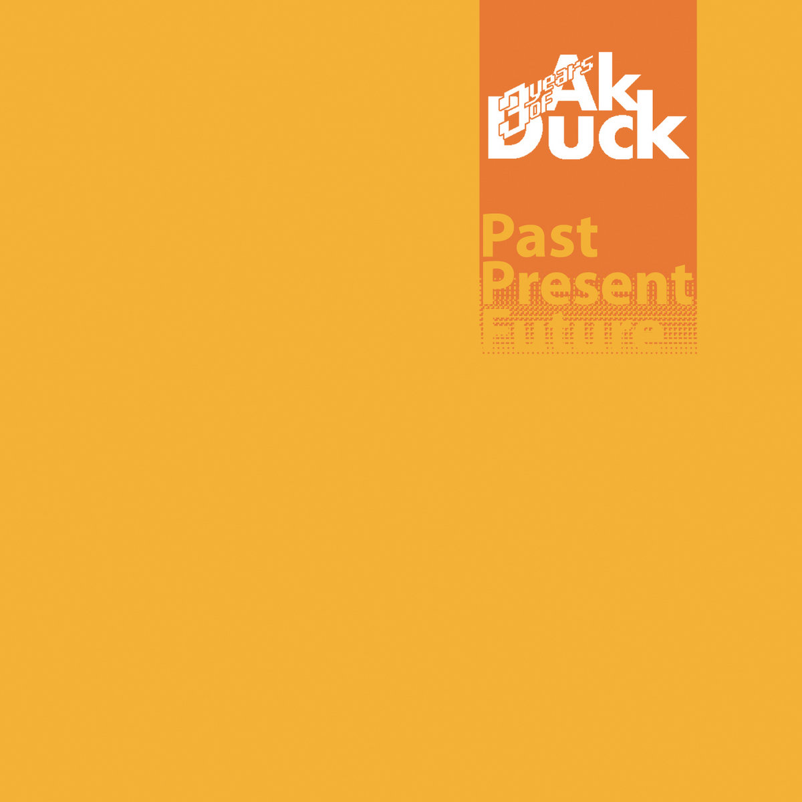
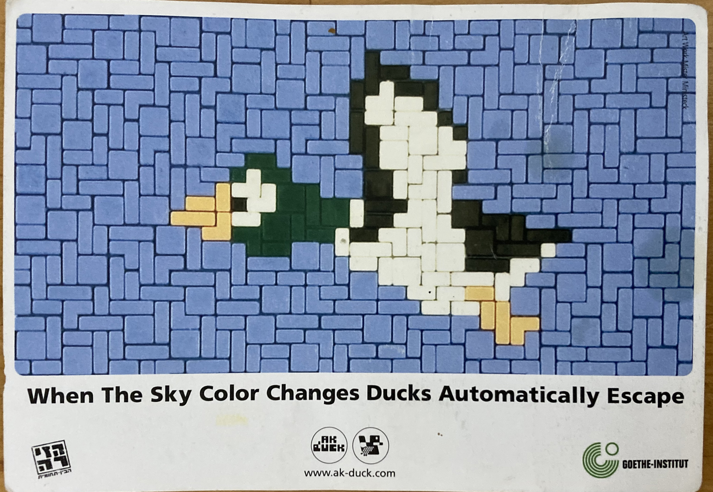
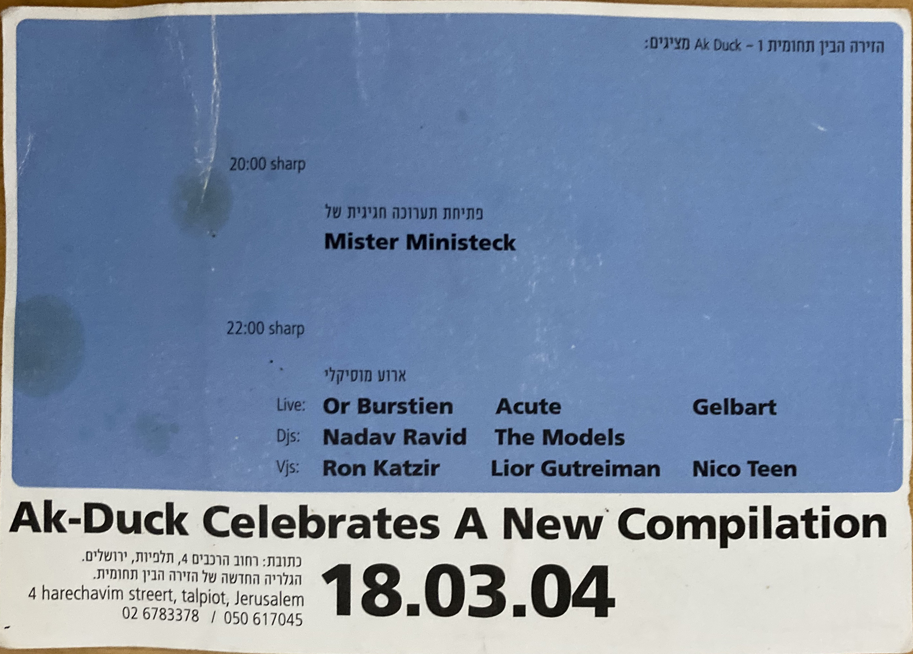

אק דאק
אדם/קבוצה
אק דאק היה לייבל שהתמחה במוזיקה אלקטרונית, שהוקם ב־2002 על ידי איתמר וויינר, הראל שרייבר ואריאל תגר. הלייבל החל על ידי הוצאת דיסקים צרובים, בדומה לפאקט רקורדס, של אמנים שביניהם מקימי הלייבל ואנשים קשורים, כגון גרונדיק וסלאבה (הוצאה משותפת עם פאקט), Digital_Me, Acute, גלברט, ניקו טין ורן סלוין. המוזיקה נעה בין אלקטרו, IDM, אמביינט, ג'אנגל ואקספרימנטלית לכיוון הגליץ'.
The Models (הראל שרייבר ואיתמר וויינר) וניקו טין בהופעה, 2003. צילום: רן אייזנשטט



אלבומים שיצאו באק דאק.
מימין: ספארק או (איתמר וויינר),
רסס (רן סלוין), אוסף 3 שנים ללייבל
מימין: ספארק או (איתמר וויינר),
רסס (רן סלוין), אוסף 3 שנים ללייבל


פלאייר לאירוע הופעות ומסיבה של אק דאק בזירה, 2004
וויינר כיום הוא הבעלים של הסניף של אוגנדה בתל אביב (הירושלמי המקורי נסגר). שרייבר הוא מעצב גרפי וממשיך לעסוק במוזיקה, הקים מספר לייבלים שביניהם Confused Machines. תגר כיום הוא דיג'יי והקים את פורטונה רקורדס.